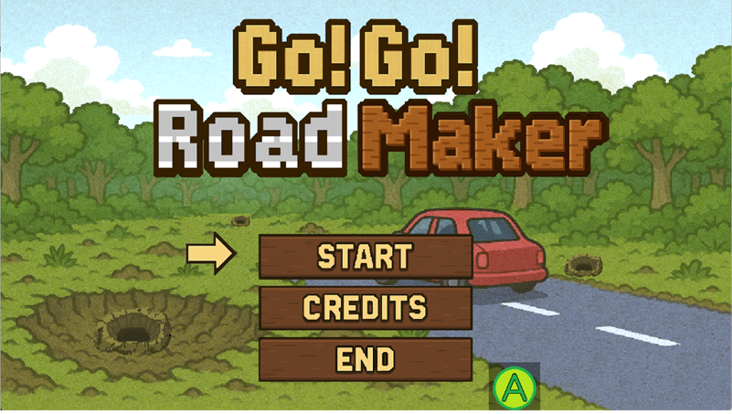
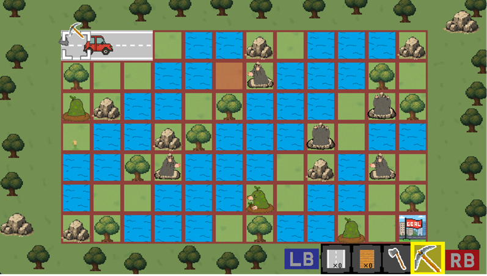
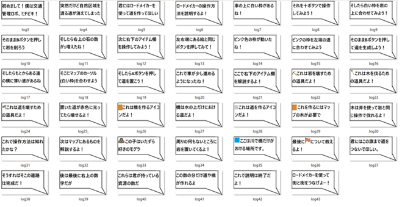
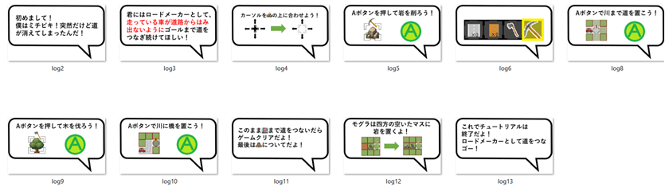
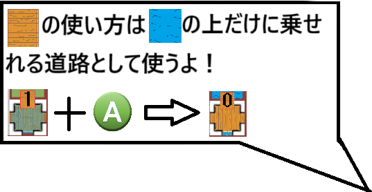
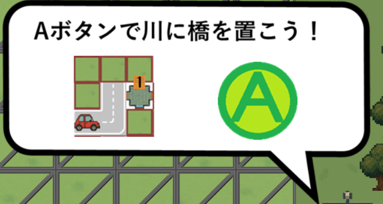

このゲームは、散りばめられた木や岩を適したツールを使って採取し
車が道から端に行かないようゴールまで道を繋げていくゲームです。
ステージはチュートリアルステージを合わせて6ステージあり
プレイヤー側がステージを進めるごとに操作技術を上げて判断速度も上がるように、
ステージが上がるごとにマップの難易度と
4～6ステージの間限定で車の速度も徐々に上がるようになっています。


パズルゲーム
Chat gpt,Visual Studio C++
2025/5か月
4人
チュートリアル全般、ステージ説明、各マップの初期考案
チーム名が「4U」に決まった際、同音の “for you” から
「誰かをサポートする」という発想を得て、このゲームを企画しました。
また、プログラミングを学び始めて1年が経過した
自分たちの実力を試す良い機会と捉え、「期日までに必ず完成させる」
という目標を立て、チーム制作に挑戦しました。
自分の担当がチュートリアルだったので、
人に伝わるように、ChatGPTに頼らず自分で文章を書き、
他の人に聞いてみることを繰り返して何度も試行錯誤しました。
特に思い切ったのは、最初に書いた文章のみのチュートリアルが
伝わりにくいと考え、アニメーションを組み込みながら一から作り始めたことです。
最初自分たちのゲームは複雑な操作で木や岩などを
全部の説明が必要だと考えていたので、
どうしても長々としたチュートリアルになってしまい、
とてもそのまま出せるような感じではなかったのです。
そこから、ほとんど操作しながら進められて
途中で止まらないチュートリアルにしようと考え、
文章だけでなくアニメーションを加えた説明に変更しました。
その結果、チュートリアル全体の時間を
初期の2分から1分弱まで短縮することができました。


先程も言ったように最初は文章での説明をしようとしましたが、
それだと時間がかかりプレイヤー側の負担になりかねませんでした。
なのでゲームに使われているイラストと短い文を使って説明しました。
他には吹き出しの枠ギリギリに書かないようにしたり、
文章も短く書き読みやすくしました。


今回の制作で一からゲームを説明するのは工夫するべきところが多いことを知り、
アニメーションを使用しての説明なら
プレイヤーの時間をかけず簡潔に分かりやすく伝わることが学べました。
それと、プレイヤーに直接何かさせる物は人に聞いて
作っていったほうが良いものができることも学べたので
これからも人の意見は取り入れていこうと思いました。